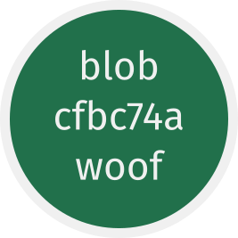
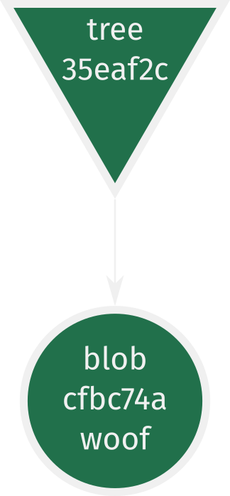
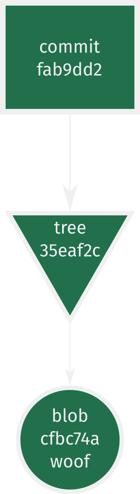
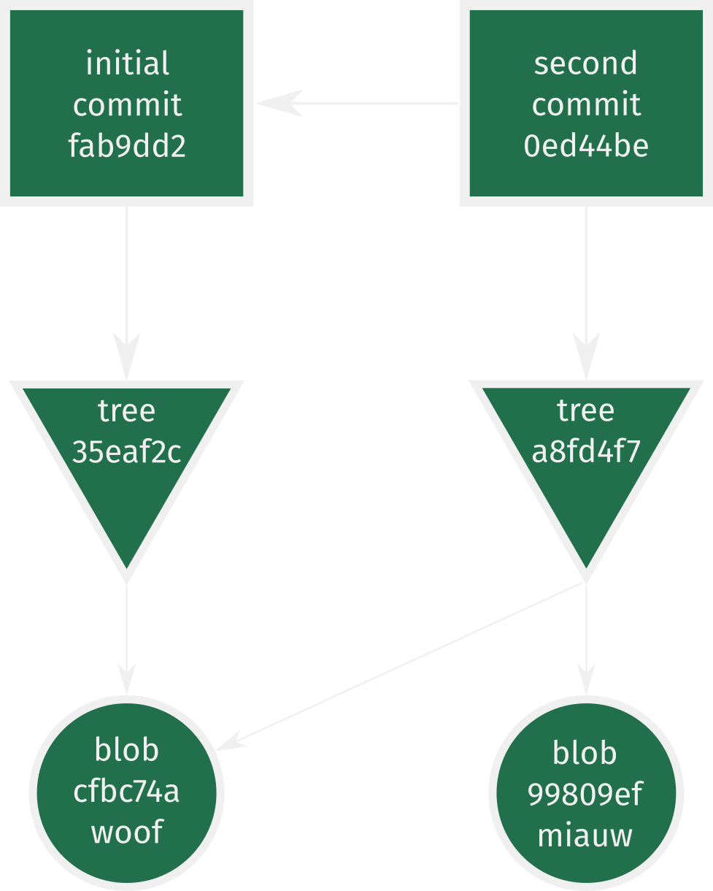
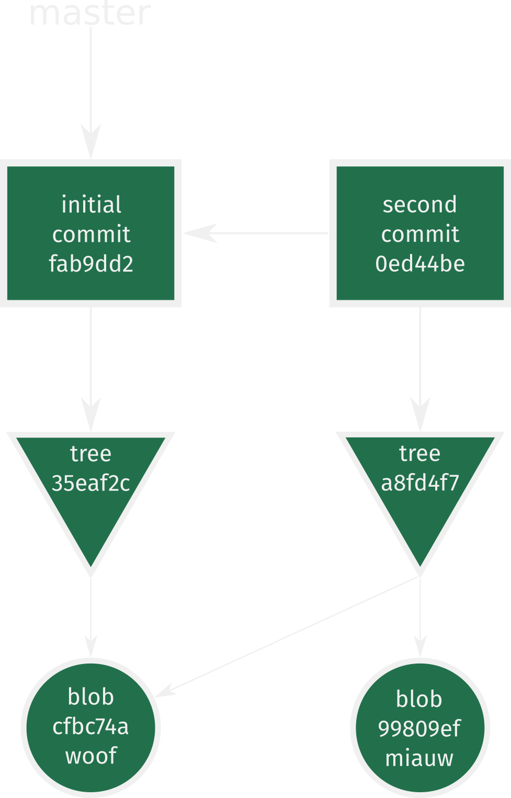
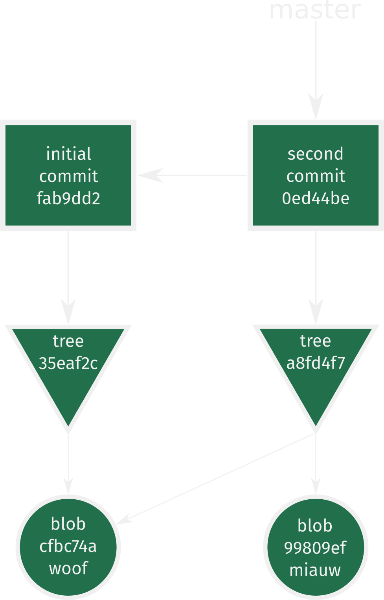
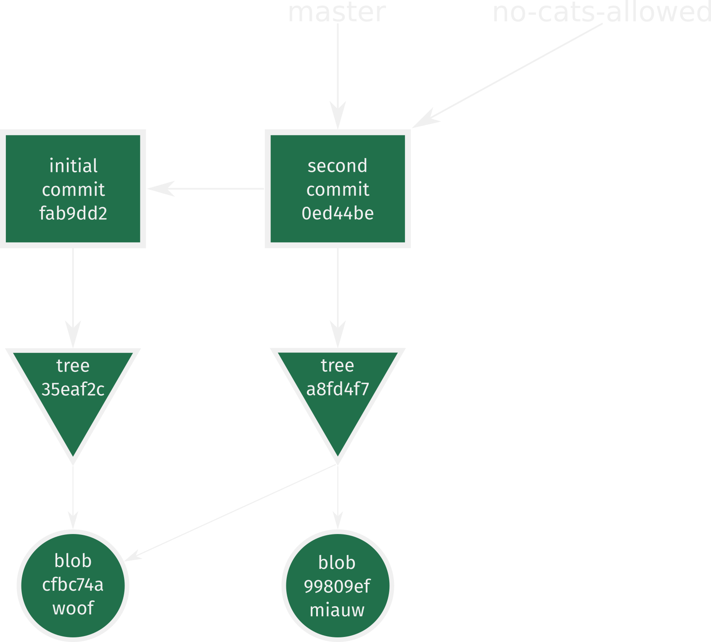
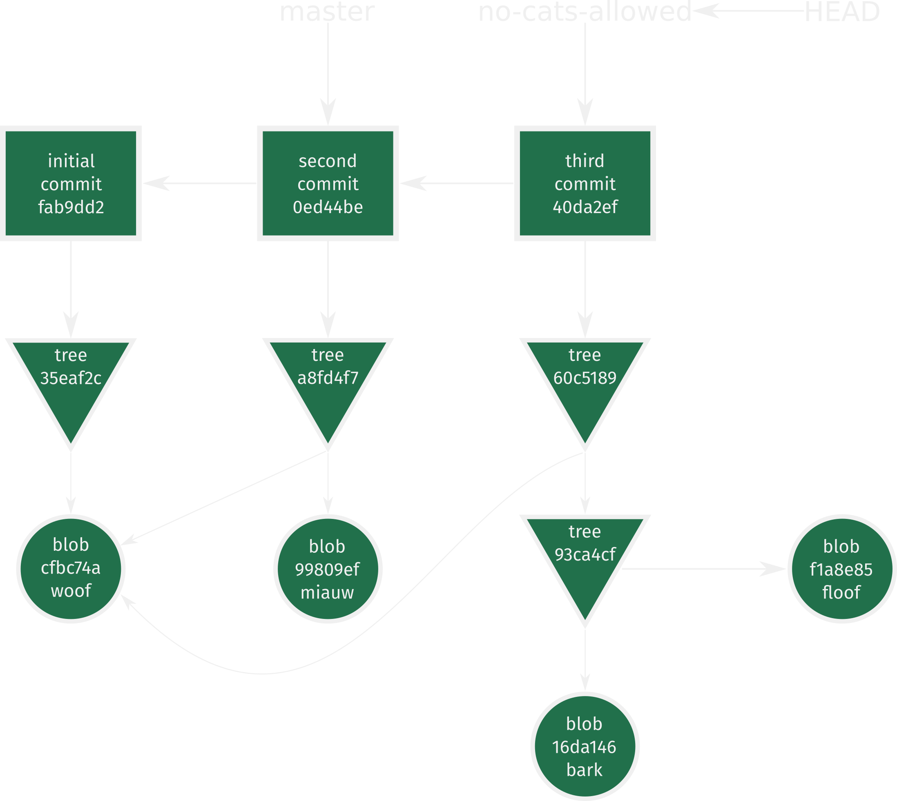
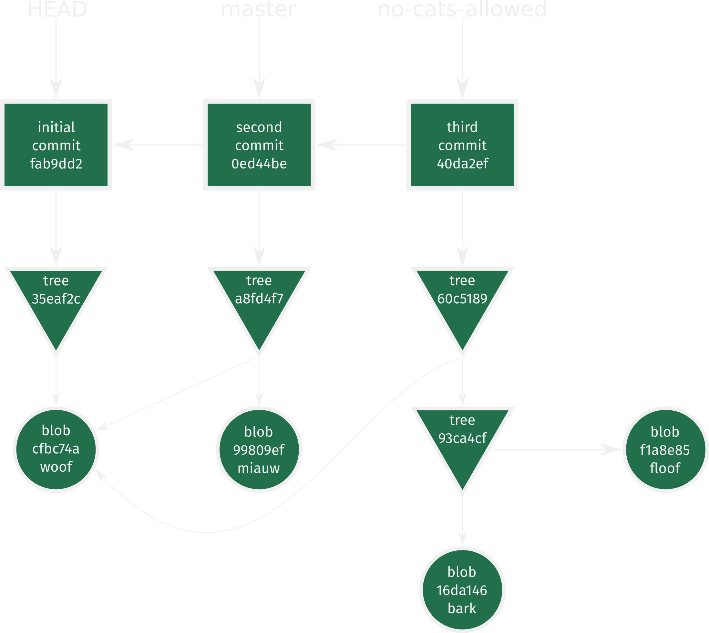
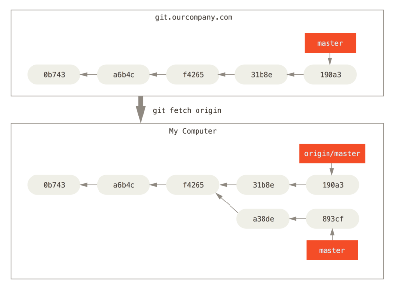

git gud
or "How I Learned to Stop Worrying and Love the blob"
Created by Pieter Moris and contributors
All in all, git is pretty
amazing!
At least, that's what everyone keeps telling me.
Does this situation sound familiar?


Keep calm
and
git gud
DISCLAIMER
Resources created by people more knowledgeable and witty than I
- Git from the Bottom Up: https://jwiegley.github.io/git-from-the-bottom-up/
- Git from the inside out: https://maryrosecook.com/blog/post/git-from-the-inside-out
- How Git Works - Fear Not The SHA! (gitlab): https://youtu.be/P6jD966jzlk
- OSCON 2016: Dissecting Git's Guts - Git Internals - Emily Xie: https://youtu.be/YUCwr1Y6bFI
- Advanced Git: Graphs, Hashes, and Compression, Oh My!: https://youtu.be/ig5E8CcdM9g
- The Pro Git book: https://git-scm.com/book/en/v2
- Visualizing Git Concepts with D3 (a brilliant resource to get a feel for what different commands actually do!) https://onlywei.github.io/explain-git-with-d3/
- Visualizing Git’s Merkle DAG with D3.js: https://tylercipriani.com/blog/2016/03/21/Visualizing-Git-Merkle-DAG-with-D3.js/
- Git for Computer Scientists: http://eagain.net/articles/git-for-computer-scientists/
- Git is a Directed Acyclic Graph and What the Heck Does That Mean?: https://medium.com/girl-writes-code/git-is-a-directed-acyclic-graph-and-what-the-heck-does-that-mean-b6c8dec65059
Anytime you experience an insightful "AHA!"-moment, you should probably be praising these people, rather than me. Idem ditto whenever you chuckle.
A brief recap of git
TL;DR
Glossary of terms
Come back to this slide at the end of the presentation.
- Repository: Archive with snapshots of working directory (commits). Defined by
.git directory. Can be local or remote. Contains references to branches (heads), tags and remote branches. - Working tree or directory: a directory on your folder with a
.gitfolder. - Index or staging area: a (conceptual) area in between your working directory and repository.
- Commit: a snapshot of your working directory at a specific point in time.
- Branch: a reference/name/pointer/alias for a specific commit.
- master: the default name for your local branch.
- origin: the default name for your main remote repository.
- HEAD: a file pointing to the currently checked-out branch or commit.
The following commands are referred to as
git porcelain commands;
the ones the user normally interacts with.
Later on, we'll encounter the so-called
git plumbing commands;
low-level commands to manipulate and inspect objects.

You might have heard that git is represented by a
Directed Acyclic Graph (DAG)
But what are the nodes and edges of this graph? And how does it track files?
Enter the .git directory
That file named
cf/bc74af89ccf0d0ddbe488b4a2df7318786759dBlobs are created when you git add files. They're the most basic building block of git.
But both its name and contents look like nonsense, right?
two, three,
cha, cha, SHA-1?
Git is a content-addressable filesystem
Any kind of content you insert into the repository can be retrieved using a unique key or fingerprint
That key is a SHA-1 checksum of the contents of the file (and a short header).
You've probably encountered these before as the names of your commits.
Git objects
Blobs 🍮
So what did "git add dog" achieve?
- Creates a new blob file in
.git/objects/. - Gives it a unique name by hashing the file content (and a header).
- The first two characters of the 40 char SHA-1 digest forms a sub-directory.
- The rest forms the file name.
directed acyclic graph structure
These blob objects form the beginning of our graph.
Every text file with the contents "woof" that you'll ever create in your project (or any future projects) will point to the same blob, regardless of its filename.
This means that if you'd been following along, you will have ended up with the exact same blob.
This is part of what makes git's storage method so efficient. But more on that later.
Git objects
Trees 🌳
One of the biggest hurdles to wrapping your head around git, is all of its jargon.
Whenever you see the term tree, just think directory.
Note: you might see some people refer to the git graph as a tree as well.Tree objects record the directory structure.
$ tree .git/objects
.git/objects
├── 35
│ └── eaf2cfe26d5a30558c7aceaad5fadc72a09164
├── 99
│ └── 809ef5ef2a4458e883f53c0ce55fc9f7061844
├── cf
│ └── bc74af89ccf0d0ddbe488b4a2df7318786759d
├── fa
│ └── b9dd251f10ff00622bfd0f069e98b492d433c8
├── info
└── pack
$ git cat-file -p 35eaf2c
100644 blob cfbc74af89ccf0d0ddbe488b4a2df7318786759d dog
Two new files showed up after committing: 35eaf2c and fab9dd2. The first of these is a so-called tree object.
Tree objects record the directory structure.
$ git cat-file -p 35eaf2c
100644 blob cfbc74af89ccf0d0ddbe488b4a2df7318786759d dog
- Object stored in
.git/objectswith SHA-1-derived name. - Contents: 1 line with associated mode, type, filename and SHA-1 hash per target node => this is enough to restore any file.
- DAG-view: nodes that point to blobs or other trees (i.e. sub-directories).
- Trees are created from the current state of the index (more on that later).
- Trees are stored whenever a commit is made.
- Trees made up of the same blobs/trees always hash to the same digest (type, size, contents).
directed acyclic graph structure
Blobs record content of files.
Trees record directory structure.
Git objects
Commits 💾
We now have a bunch of tree and blob objects, but we haven't yet found a way to:
- Record meta-data about the snapshots (who what where?).
- Traverse these snapshots.
The final type of object, the commit, takes care of this.
$ tree .git/objects
.git/objects
├── 35
│ └── eaf2cfe26d5a30558c7aceaad5fadc72a09164
//
├── fa
│ └── b9dd251f10ff00622bfd0f069e98b492d433c8
├── info
└── pack
$ git cat-file -p fab9dd2
tree 35eaf2cfe26d5a30558c7aceaad5fadc72a09164
author Pieter <13552343+pmoris@users.noreply.github.com> 1535631839 +0200
committer Pieter <13552343+pmoris@users.noreply.github.com> 1535631839 +0200
Initial commit
- Created alongside tree and points to it.
- Also contains author, committer, timestamp and commit message.
- Name is SHA-1 digest of contents (and will thus be unique everytime and everywhere).
directed acyclic graph structure
This gives us three "levels" of git objects:
- Level 1: Blobs record content of files. Each new file or change gets its own blob.
- Level 2: Trees record the directory structure in a snapshot, of a collection of folders and file revisions.
- Level 3: Commits point to trees and provide meta-data.
Do you recall that cat blob we created manually?
It's possible, using only
It's also possible to manually create a commit object that points to this tree and to notify our repo that this commit exists in our branch to make it reachable.
1. Add the file to the staging area and write its contents to a tree object.
# add file to staging area - equivalent to `git add`
$ master 1 git update-index --add --cacheinfo 100644 99809ef5ef2a4458e883f53c0ce55fc9f7061844 cat
# the index contains files and directories to be recorded by tree
$ master 1 git ls-files --stage
100644 blob 99809ef5ef2a4458e883f53c0ce55fc9f7061844 cat
100644 blob cfbc74af89ccf0d0ddbe488b4a2df7318786759d dog
# create tree object - normally handled by `git commit`
$ master ● 1 ✚ 1 git write-tree
a8fd4f7e27f7b943a6b1ae5e84430d56d234526c
$ master ● 1 ✚ 1 git cat-file -p a8fd
100644 blob 99809ef5ef2a4458e883f53c0ce55fc9f7061844 cat
100644 blob cfbc74af89ccf0d0ddbe488b4a2df7318786759d dog
2. Next we create a new commit object and chain it the one before it.
# create commit object - normally handled by `git commit`
$ master ● 1 ✚ 1 echo "2nd commit manual" | git commit-tree a8fd4f7 -p fab9dd2
0ed44be76b3ae96cb3fa7e3501f8ba56e488f7f1
$ master ● 1 ✚ 1 git cat-file -p 0ed44be76b3ae96cb3fa7e3501f8ba56e488f7f1
tree a8fd4f7e27f7b943a6b1ae5e84430d56d234526c
parent fab9dd251f10ff00622bfd0f069e98b492d433c8
author Pieter <13552343+pmoris@users.noreply.github.com> 1535829462 +0200
committer Pieter <13552343+pmoris@users.noreply.github.com> 1535829462 +0200
2nd commit manual
This second commit object has an extra line containing a tree object!
We're now ready to see how git keeps track of the history of our project.
directed acyclic graph structure
By chaining commits, each one pointing to its parent, a history is formed.
- Level 1: Blobs record content of files. Each new file or change gets its own blob. Identical blobs are re-used by trees.
- Level 2: Trees record the directory structure in a snapshot, of a collection of folders and file revisions.
- Level 3: Commits point to trees, provide meta-data and can be chained to one another in order to form a history.
New commits always point to their parents (i.e. backwards in time), never the other way around!
(cf. directed acyclic graph)
At this point we can recall the history by calling the log command directly on the new commit.
$ master ● 1 ✚ 1 git log --stat 0ed44be
commit 0ed44be76b3ae96cb3fa7e3501f8ba56e488f7f1
Author: Pieter <13552343+pmoris@users.noreply.github.com>
Date: Sat Sep 1 21:17:42 2018 +0200
2nd commit manual
cat | 1 +
1 file changed, 1 insertion(+)
commit fab9dd251f10ff00622bfd0f069e98b492d433c8 (HEAD -> master)
Author: Pieter <13552343+pmoris@users.noreply.github.com>
Date: Sat Sep 1 21:14:04 2018 +0200
Initial commit
dog | 1 +
1 file changed, 1 insertion(+)
So far so good, we've (almost) succesfully reproduced the porcelain command git commit.
But why doesn't the regular git status command work at this point? And where do branches come into play?
References and branches ⎇
So how does git keep track of what commit we're currently on?
The answer is branches!
Their nature and behaviour will also become more clear when we look at them from a DAG perspective.
Branches are nothing more than references or pointers or aliases to specific commit objects.
They provide names for certain points in the graph and allow us to easily access them, instead of having to remember the hash digests of specific commits.
Branches reside in...
$ master ● 1 ✚ 1 ls .git/refs/heads/
master
And are simply plain text files pointing to a commit.
$ master ● 1 ✚ 1 cat .git/refs/heads/master
fab9dd251f10ff00622bfd0f069e98b492d433c8
directed acyclic graph structure
The master branch is pointing to the initial commit we created using the regular porcelain commands.
We can update the master reference to point to the new commit.
$ master ● 1 ✚ 1 git update-ref refs/heads/master 0ed44be
$ master ✚ 1 cat .git/refs/heads/master
0ed44be76b3ae96cb3fa7e3501f8ba56e488f7f1
$ master ✚ 1 git log
commit 0ed44be76b3ae96cb3fa7e3501f8ba56e488f7f1 (HEAD -> master)
Author: Pieter <13552343+pmoris@users.noreply.github.com>
Date: Sat Sep 1 21:17:42 2018 +0200
2nd commit manual
commit fab9dd251f10ff00622bfd0f069e98b492d433c8
Author: Pieter <13552343+pmoris@users.noreply.github.com>
Date: Sat Sep 1 21:14:04 2018 +0200
Initial commit
Normally, this moving of the reference branch happens behind the scenes when we use the porcelain command git commit.
directed acyclic graph structure
Let's create a new branch now to see how it affects the graph.
# retrieve the cat object from our repository
# and place it in the working directory to tidy up
$ master ✚ 1 git cat-file -p 99809ef5 > cat
# Create new branch
$ master git checkout -b "no-cats-allowed"
Switched to a new branch 'no-cats-allowed'
# Check references
$ no-cats-allowed ✚ 1 cat .git/refs/heads/no-cats-allowed
0ed44be76b3ae96cb3fa7e3501f8ba56e488f7f1
$ Check current commit
$ no-cats-allowed ✚ 1 git rev-parse HEAD
0ed44be76b3ae96cb3fa7e3501f8ba56e488f7f1
Creating a new branch merely adds a reference to the same commit we were on before. It is literally just a text file.
directed acyclic graph structure

$ no-cats-allowed git rm cat
rm 'cat'
$ no-cats-allowed ● 1 mkdir doge
$ no-cats-allowed ● 1 echo "bark" > doge/much
$ no-cats-allowed ● 1 … 1 echo "floof" > doge/very
$ no-cats-allowed ● 1 … 1 git add doge/
$ no-cats-allowed ● 3 git status
On branch no-cats-allowed
Changes to be committed:
(use "git reset HEAD <file>..." to unstage)
deleted: cat
new file: doge/much
new file: doge/very
$ no-cats-allowed ● 3 git commit -m "doggies"
[no-cats-allowed 40da2ef] doggies
3 files changed, 2 insertions(+), 1 deletion(-)
delete mode 100644 cat
create mode 100644 doge/much
create mode 100644 doge/very
$ no-cats-allowed git rev-parse HEAD
40da2ef175b6693c785251467946f1cdaf5e6552
$ no-cats-allowed git cat-file -p HEAD
tree 60c51895339b14261e18cb4555b4a43d1cfdc397
parent 0ed44be76b3ae96cb3fa7e3501f8ba56e488f7f1
author Pieter <13552343+pmoris@users.noreply.github.com> 1535872422 +0200
committer Pieter <13552343+pmoris@users.noreply.github.com> 1535872422 +0200
doggies
directed acyclic graph structure
Don't lose your HEAD
How does git know which working directory to show us and which branch to operate on when we use porcelain commands like git commit?
That's where HEAD comes into play.
$ no-cats-allowed cat .git/HEAD
ref: refs/heads/no-cats-allowed
$ no-cats-allowed cat .git/refs/heads/no-cats-allowed
40da2ef175b6693c785251467946f1cdaf5e6552
$ no-cats-allowed git rev-parse HEAD
40da2ef175b6693c785251467946f1cdaf5e6552
$ no-cats-allowed git cat-file -p HEAD
tree 60c51895339b14261e18cb4555b4a43d1cfdc397
parent 0ed44be76b3ae96cb3fa7e3501f8ba56e488f7f1
author Pieter <13552343+pmoris@users.noreply.github.com> 1535872422 +0200
committer Pieter <13552343+pmoris@users.noreply.github.com> 1535872422 +0200
doggies
This is the final aspect of what happens behind the scenes when we use the porcelain command git commit.
HEAD...
- Is a flat text file in the
.gitdirectory. - Points to the current reference, i.e. a label for a specific commit.
- Is updated whenever we commit or checkout a branch or commit.
More slightly confusing jargon: “head” refers to any one of the named refs in the repository; “HEAD” refers to the currently active one.
directed acyclic graph structure
Detached HEAD?!1
A (rather odd) way of saying that we are checking out a commit that no branch points to directly.
Index or staging area
We glossed over this earlier, but for the sake of completion.
The index is the staging area in between the working directory and a commit.

For a good write-up, see: https://stackoverflow.com/questions/25351450/what-does-adding-to-the-index-really-mean-in-git
Conceptually it's an ever-changing tree object stored as a single large binary file .git/index
It can be viewed via (see previous slides)
$ master 1 git ls-files --stage
100644 blob 99809ef5ef2a4458e883f53c0ce55fc9f7061844 cat
100644 blob cfbc74af89ccf0d0ddbe488b4a2df7318786759d dog
- Easy way to reset without reverting commits.
- Allows splitting new changes into multiple commits.
- Simplifies merging.
A little something about graph properties
Advantages of a DAG
- Only 1 copy of each file (better yet: its contents) is stored regardless of the number of snapshots. Blobs are re-used.
- History can be rewound from any point in the graph.
- Refs provide entrypoints through meaningful names (i.e. bookmarks).
Git is also a Merkle Graph
The SHA-1 hash names used for git objects provides an elegant way to verify the integrity of all the data in the repository.
The hash of any one object depends on the hashes (and contents) of all the files that came before it. A similar technique is used by Bitcoin and BitTorrent. (But don't call git a blockchain unless you want to anger some people.)
This is also the reason why re-writing history can be dangerous in git. Everything downstream will be affected. (Although this generally only becomes a problem when working with collaborators.)
Merging branches
When merging branches, each commit is interpreted as a set of changes.
Each merge tries to reconsolidate (at least) three different snapshots: the ones you provide in the command and their parent.
The following command finds the common ancestor commit of two branches.
$ git merge-base master no-cats-allowed
0ed44be76b3ae96cb3fa7e3501f8ba56e488f7f1
One of the following scenarios can occur:
- Giver is parent of receiver: fast-forward (follow sequence of revisions).
- Two different lineages are merged: start from common ancestor and play out all changes in sequence. The new commit will have two parents and potential conflicts must be resolved.
- File content base = giver != receiver: modification.
- File content base = receiver != giver: modification.
- File content base != receiver != giver: conflict.
Source: https://codewords.recurse.com/issues/two/git-from-the-inside-out
A few more useful tidbits
Reset vs checkout
- Reset moves the thing that HEAD is pointing to, i.e. the branch.
- Checkout moves HEAD itself (and can lead to a detached HEAD).
Source: https://stackoverflow.com/a/3639387
More info: https://git-scm.com/book/en/v2/Git-Tools-Reset-Demystified
Reset can do a few different things depending on the parameter you pass.
git reset [<mode>] [<commit>]
--soft: leaves index and working dir untouched.--mixed (default): resets index and leaves working dir untouched.--hard: resets index and working dir. One of the few ways to lose progress in git!
Local vs remote branches
A common point of confusion is the relation between local and remote branches.
As we've seen, branches are just references to specific commits. Ergo, remote branches are pointers to specific commits on the remote repository.
You can't move these references yourself.
More info: https://git-scm.com/book/en/v2/Git-Branching-Remote-Branches
Your branch is up-to-date with 'origin/master'...
...except it's not?
This means you're up-to-date with the ref called origin/master, which is a local reference on your local repo stored in .git/refs/remotes/origin/master.
This ref is tracking the remote master branch, but your local repository does not know its state until you perform a fetch or pull.
This also explains why you must sometimes do a merge with origin/master.
Oh, and the following two steps are equivalent.
$ git pull
$ git fetch
$ git merge origin/master
Removing local and remote branches
$ git push --delete remote_name branch_name
$ git branch -d branch_name
Initial setup, managing SSL keys, creating your own remote repositories, etc.
There's a bunch of stuff to know outside of regular usage. Fortunately, most of these things can be found in one of the many excellent resources online. The Pro Git book is usually a good starting point.
Pretty git graphs in the CLI
git log --oneline --abbrev-commit --all --graph --decorate --colorSee this SO post for even more elaborate options (hint: create an alias...).
Removing tracked files after updating .gitignore
Adding a file to the ignore file will prevent it from being added to the index, but what if it's already there?
git rm --cached <file>
or
git rm -r --cached .
git add -A
Packfiles, garbage collection and deltas
I mentioned that git doesn't store diffs, but every new file (based on its contents) is stored in its unique blob.
But this is not the whole story.
Git does regularly create binary delta's called packfiles based on its internal objects. You can manually trigger this by calling git gc.
More info: https://git-scm.com/book/en/v2/Git-Internals-Packfiles
Revision names and syntax
Tree-ish and commit-ish
There's an extensive amount of syntax to refer to specific commits.
HEAD
HEAD^ # parent
HEAD^^ # parent's parent
HEAD^2 # second parent if commit has >1 parent
HEAD~n # n'th generation ancestor
Setting upstream branches
git push -u origin test
Or equivalently
git push origin master; git branch --set-upstream master origin/master
Makes current branch track a remote one, i.e. allows pushing/pulling without specifying the remote ref name.
Further aspects to explore:
- Stashing: temporarily storing the changes in your working tree without needing to commit them. Allows you to move around the revision history.
- Reverting: adding a new commit that "undoes" a previous one. Better than re-writing history in many cases (e.g. collaborators).
So you accidentally commited sensitive data to your repo...
Sensitive data in second commit
$ mkdir kakapo-repo && cd kakapo-repo/ && git init
Initialized empty Git repository in /media/pieter/DATA/Wetenschap/Doctoraat/biodm/reboot2018/kakapo-repo/.git/
$ No commits yet on master touch cultofthepartyparrot
$ No commits yet on master … 1 git add -A
$ No commits yet on master ● 1 git commit -m "Initial kakapo commit"
[master (root-commit) 0e7e785] Initial kakapo commit
1 file changed, 0 insertions(+), 0 deletions(-)
create mode 100644 cultofthepartyparrot
$ master echo 'https://www.youtube.com/watch?v=9T1vfsHYiKY' \
> secretsofthekakapo
$ master … 1 git add -A
$ master ● 1 git commit -m "Maybe this is better kept private..."
[master 920a49e] Maybe this is better kept private...
1 file changed, 1 insertion(+)
create mode 100644 secretsofthekakapo
$ master git hash-object secretsofthekakapo
29d7910d2fcf6bdb5dfbbbd1dc725d9a5648f7d7
Removing it from subsequent commits doesn't achieve anything
$ master touch sirocco
$ master … 1 rm secretsofthekakapo
$ master ✚ 1 … 1 git add -A
$ master ● 2 git commit -m "More kakapos and removed compromising material"
[master 7b8164b] More kakapos and removed compromising material
2 files changed, 1 deletion(-)
delete mode 100644 secretsofthekakapo
create mode 100644 sirocco
$ master git checkout HEAD^
$ 920a49e ls
cultofthepartyparrot secretsofthekakapo
Use the filter-branches command
$ 920a49e git checkout master
Previous HEAD position was 920a49e Maybe this is better kept private...
Switched to branch 'master'
$ master git filter-branch --force --index-filter \
'git rm --cached --ignore-unmatch secretsofthekakapo' \
--prune-empty --tag-name-filter cat -- --all
Rewrite 920a49ef4d3e4558c42dd50e5700697b6e182900 (2/3) (0 seconds passed, remaining 0 predicted) rm 'secretsofthekakapo'
Rewrite 7b8164b0ede12d9486e5de0d3aea371185da1b0f (3/3) (0 seconds passed, remaining 0 predicted)
Ref 'refs/heads/master' was rewritten
$ master git push origin --force --all
This is one of the few occassions where you should use push --force.
More info: https://help.github.com/articles/removing-sensitive-data-from-a-repository/
https://stackoverflow.com/questions/36255221/what-is-the-difference-between-tree-filter-and-index-filter-in-the-git
Clean up leftovers
$ master git cat-file -p 29d7
https://www.youtube.com/watch?v=9T1vfsHYiKY
$ master git for-each-ref --format='delete %(refname)' \
refs/original | git update-ref --stdin
$ master git reflog expire --expire=now --all
$ master git gc --prune=now
Counting objects: 5, done.
Delta compression using up to 8 threads.
Compressing objects: 100% (3/3), done.
Writing objects: 100% (5/5), done.
Total 5 (delta 0), reused 0 (delta 0)
$ master git cat-file -p 29d7
fatal: Not a valid object name 29d7
More info about final clean up: https://help.github.com/articles/removing-sensitive-data-from-a-repository/
https://stackoverflow.com/questions/16584256/after-filter-branch-ing-to-remove-file-from-git-repo-file-remains-in-pack-file
That's all folks!
This should set you up to make your git experience smooth sailing cruising from here on out.
Challenges
Have a look at this excellent interactive visualisation to reinforce some of the concepts we've gone over: https://onlywei.github.io/explain-git-with-d3/
Challenges
- Create a simple "Hello World" repository with a few commits and/or branches, keeping an eye on the
.git/objectsdirectory as you do so and using thegit cat-file -p/tcommands to inspect new objects. - What would happen if you delete the
.git/indexfile after staging content? Think about it, then try it! - Does a
git commit --amendchange the name (i.e. SHA-1 digest) of the commit that is updated? Think about it, then try it! Read up on the amend command here if you're not familiar with this command. - Create a copy of your repository and append a single character to 1 of the objects in .git/objects. Use
git statusandgit fsck to see how git deals with the damage you've caused. - Use
git checkouton a commit's hash directly (instead of on a ref). What will happen if you create a new commit here? Inspect the graph and try to find a route that can reach this new commit. Look up thegit prunecommand. - Suppose that, after committing a few times, we modify an existing file, add it to the index and then modify it again. What will happen when we try to checkout a different branch? Think about how the working tree, index and commit you're trying to checkout differ. You can look up the answer in "Git from the inside out".
Challenges
- Explore the git game: https://www.git-game.com/.
- Or the interactive guide to branching, cherry-picking and rebasing: https://learngitbranching.js.org/.
For all of these activities, try to keep the DAG structure of git in the back of your mind.